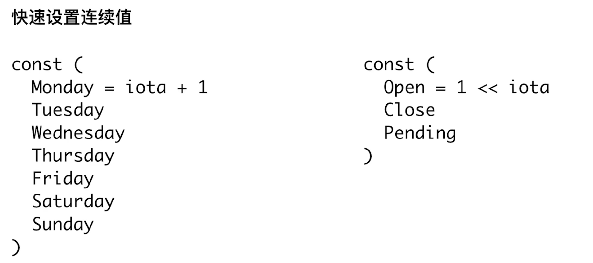

常量&数据类型
常量

- 位操作
const (
Readable = 1 << iota
Writable
Executable
)
禁止类型转换
- 别名都不可以
类型预定义的值
- math.MaxInt64
- math.MaxFloat64
字符串string
- string == 0 来判断
数组
a := [...]int{1,2,3,4}
b := [...]int{1,2,3,4}
- 要求数组长度，顺序，和类型一致
位操作
1 &^ 0 -- 1
1 &^ 1 -- 0
0 &^ 1 -- 0
0 &^ 0 -- 0
循环

if条件

switch
func TestSwitchCaseCondition(t *testing.T) {
for i := 0; i < 5; i++ {
switch {
case i%2 == 0:
t.Log("Even")
case i%2 == 1:
t.Log("Odd")
default:
t.Log("unknow")
}
}
}